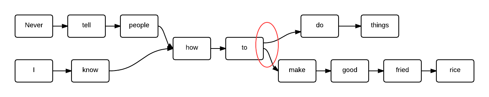

Markov chains for fun
and profit
"It is fatal to enter any war without the software."
- GenMacArthurC.Clarke @GenMcArtCClarke
"People respond in accordance to how you relate to them and play the guitar."
- Willie Nelson Mandela @WillieNelMan
About me |
|
Jeremy Green - Consultant |
|

|
@jagthedrummer jeremy@octolabs.com http://www.octolabs.com/ |
Things I Enjoy : Dopamine, SerotoninOther Interests : Drumming, Photography, and Brewing |
|
Quote Masher
quote-masher.herokuapp.comWhat are Markov Chains?
According to WikiPedia
"A Markov Chain is a random process that undergoes transitions from one state to another on a state space"
State Machines
Behaving Randomly

Deterministic State Machines
Markov Chains are Non-Deterministic
"memoryless"
Applications for
Markov Chains
Simulating Moods

Simulating Stocks

Simulating Weather

Complex Chains

Text processing
"George Lucas doesn't have the duty to do good."
- PopeFranFordCoppola @PopeFranFordCop
An Example Deconstructed
"Never tell people how to make
good fried rice."
- GeorgePattonOswalt @GeorgePattonOz
"Never tell people how to do things."
- General George Patton
"I know how to make good fried rice."
- Patton Oswalt
Probability Function
rand(2)
Choose your own adventure
Quote Masher Admin Demo
quote-masher.herokuapp.comOR
Let's see some code!
How would you code this?
Starting with tests, of course!
RSpec.describe MarkovChainer do
before :each do
@chainer = MarkovChainer.new
end
# ...
end
RSpec.describe MarkovChainer do
# ...
describe "#train" do
it "should accept a sentence" do
expect {
@chainer.train("This is a test message")
}.to_not raise_error
end
end
#...
end
RSpec.describe MarkovChainer do
#...
describe "#generate with one sentece" do
it "should return the original sentence" do
@sentence = "This should come back un-changed."
@chainer.train(@sentence)
expect(@chainer.generate).to eq(@sentence)
end
end
#...
end
RSpec.describe MarkovChainer do
describe "#generate with two sentences" do
it "should mix the sentences" do
@chainer.train("Rob loves Ruby")
@chainer.train("Jesse loves Javascript")
results = {}
20.times do
new_sentence = @chainer.generate
results[new_sentence] ||= 0
results[new_sentence] += 1
end
puts results
expect(results["Rob loves Javascript"]).to be > 0
end
end
end
# results
{
"Jesse loves Ruby" => 7,
"Rob loves Ruby" => 5,
"Rob loves Javascript" => 4,
"Jesse loves Javascript" => 4
}
Make with the live coding already!
Quote Masher
Admin Demo
quote-masher.herokuapp.com
"In war you win or lose live or die - and half the things a man knows at 40 hadn't been discovered when he is very probably wrong"
- GenMacArthurC.Clarke @GenMcArtCClarke
"Every revolutionary idea is just returned from visiting the stars."
- GenMacArthurC.Clarke @GenMcArtCClarke
"Any sufficiently advanced technology is very probably wrong"
- GenMacArthurC.Clarke @GenMcArtCClarke
"The greatest tragedy in mankind's entire history may be summed up by the press and other forms of nationalism."
- GenMacArthurC.Clarke @GenMcArtCClarke
"Our government has kept us in a world where half the things a man knows at 40 hadn't been discovered when he is very probably wrong"
- GenMacArthurC.Clarke @GenMcArtCClarke
"The best luck of all is the fact that flags do not wave in a constant conspiracy against the stars."
- GenMacArthurC.Clarke @GenMcArtCClarke
"Reading computer manuals without the hardware is as frustrating as reading sex manuals without the support of public opinion."
- GenMacArthurC.Clarke @GenMcArtCClarke
"Americans accept judicial supervision of their income so that the political class will not respect the boundaries he is pushing as Borat."
- George Will Ferrel @GeorgeWilFerrel
"I mean it's tough for me to play Simon Cowell in a position where you can make choices regardless of money."
- George Will Ferrel @GeorgeWilFerrel
"Often times I'm confronted with a limited budget and we really felt strongly that we could live with a slice of processed cheese."
- George Will Ferrel @GeorgeWilFerrel
"The internet in hotels should be free - and it's the fundamental thing - the mercy of God has no limits."
- PopeFranFordCoppola @PopeFranFordCop
"I don't want to be particularly clear you've probably misunderstood what I've said."
- WoodyAllenGreenspan @WoodyAGreenspan
"Seventy percent of success in life is that I am not afraid of death I just don't want to be there when it happens."
- WoodyAllenGreenspan @WoodyAGreenspan
"In Beverly Hills they turn out to 'freedom-kiss' my music business on the corporate sector."
- WoodyAllenGreenspan @WoodyAGreenspan
"My one regret in life is showing up."
- WoodyAllenGreenspan @WoodyAGreenspan
"You're going to go through life defeated and not having enough money."
- Billy Joel Osteen @BillyJoelOsteen